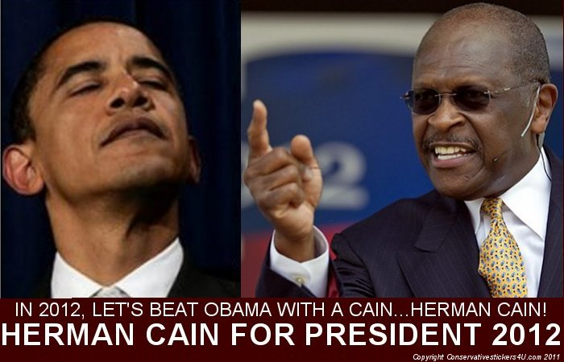

|
 |
 |
 Mr. Cain,
National Defense Click on the link to the left to read the full statement. The primary duty of the President of the United States is to protect our people. In fact, it is the principal duty of a limited federal government. They must ensure that our military and all of our security agencies are strong and capable.Immigration Click on the link to the left to read the full statement. Illegal immigration has only exacerbated illegal activity, such as the horrendous crimes of drug smuggling and human trafficking. Illegal immigrants who are repeat offenders are harder to track, making it difficult for law enforcement to prevent crime. Further, weak borders have caused a compounding problem of terrorists assimilating with illegal immigrants, crossing the border with them and entering the U.S.Spending Click on the link to the left to read the full statement. The massive debt caused by liberal policies will be passed onto our children and grandchildren if we do not stop it. They will be stuck with the tab for the government takeover of health care, industry bailouts and failed stimulus packages. They will be the ones approached with outstretched palms by the Chinese to pay back the billions upon billions we owe them. Each generation of Americans should seek to leave behind a better and more prosperous nation for the next, not saddle them with debt from reckless spending.Energy Click on the link to the left to read the full statement. America is a land blessed with abundant natural resources and the capability of the people to obtain them. From the oil-rich states of Louisiana and Alaska to the mighty dams along rivers across the states, the options for many forms of energy are real and plenty. Still, liberals continue to perpetuate the misunderstanding that the high energy consumption of a thriving nation and conservation of our precious planet are at odds with one another. Because they have perpetuated such a myth, liberals have forced excessive environmental regulations that have stifled our domestic energy production, and instead, forced American consumers to rely far too heavily upon foreign oil.Economy Click on the link to the left to read the full statement. America has long been a beacon of prosperity throughout the world. The American Dream has been attained by those who were willing to think, work and sacrifice to achieve it. Each dream was different, but each dream was made possible due to the freedoms this country provides.Health Care - Repeal Obama Care Click on the link to the left to read the full statement. President Obama and the liberals in Congress have dismantled the free market health care system and replaced it with health care “deform.” They have passed measures that compromise the sacred patient-doctor relationship, eliminate patient choice, stick a bureaucrat in the examining room, ration care and do nothing to limit frivolous lawsuits that drive up the cost of health care. In all of these provisions, they made health care more expensive and less accessible for American families they claimed to protect.Entitlements Click on the link to the left to read the full statement. Big government enthusiasts designed social programs to provide a financial safety net, but, in turn, dependency on the government for the most vulnerable in society became an expected entitlement. Decades since their inception, far too many Americans have shifted their expectations from government assistance to entitlement. Too many people have exchanged their freedom for a false sense of security that these programs are supposed to provide.Regulation Click on the link to the left to read the full statement. Eliminating the burdens of cumbersome federal regulations would provide an immediate boost for our weakened economy. It would signal to businesses and investors that the federal government intends to get out of the business of over regulating. Where regulations are required the states will do their job. Consumers and investors do not need nanny-state federal regulations to save them from themselves.Education Click on the link to the left to read the full statement. Education is the key to unlocking a prosperous future. At the heart of education should always be the students. Unfortunately, education has become weighed down with administration that has shifted the focus from educating students to maintaining an excessive level of bureaucracy through expanded unionization and regulation. It’s time to unbundle education from the federal government down to the local level.Faith and Family Click on the link to the left to read the full statement. Our Founding Fathers recognized a higher power in the formation of this nation when they said in the Declaration of Independence that all men are created equal and that they are “endowed by their creator with certain unalienable rights.” Here's a winning slogan for Mr. Cain should he win the GOP nomination:
 HERMAN CAIN FOR A RETURN TO A STRONG AMERICA |

AMERICA AT THE CROSSROADS OF HISTORY

AMERICA AWAKES IN 2009 AND DRIVES IT HOME IN 2010
RESTORE THE CONSTITUTION - I AM CONSTITUTIONAL RESTORATION (IAM-CR)
OTHER LINKS OF INTEREST
[JEFFHEAD.COM] - [THE AUDACITY OF TRUTH ABOUT BARRACK HUSSEIN OBAMA] - [HOW SARAH PALIN TRUMPS LIBERALS]

CLICK THE ABOVE BANNER FOR MORE CONSERVATIVE THEMED BUMPER STICKERS
FINE ALL-AMERICAN, LIBERTY ORIENTED BOOKS AUTHORED BY JEFF HEAD

Dragon's Fury - World War Against America and the West: Following great success in the War on Terror, politicians and analysts alike thought that future global conflict was impossible...but they were wrong. Journey into a possible future where Islamic terrorists sharpen their horrific skills & ally with Red China. In such a future, can the U.S. & western civilization survive?

The Stand at Klamatjh Falls: How rural western farmers and their supporters stood up to entrenched environmentalism, activist judges, and agencies of the Federal Government in southwestern Oregon...and prevailed.
CLICK HERE TO RETURN TO:
Site, material, & designs Copyright © 2011 by Jeff Head, All Rights Reserved
This site is not in any manner associted with, or connected to, any political party or candidate.
free hit counter